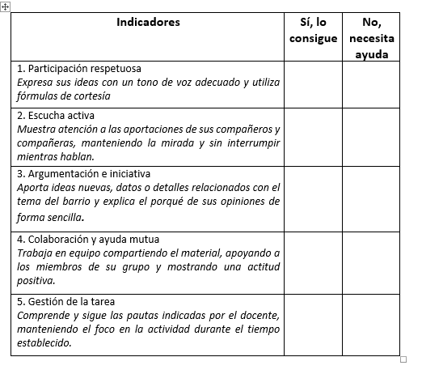
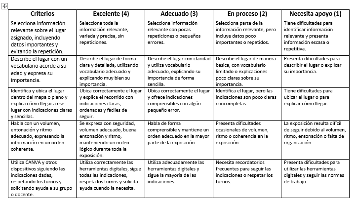
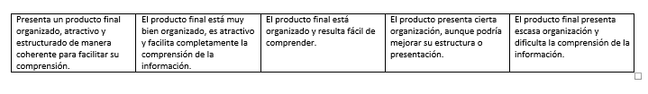
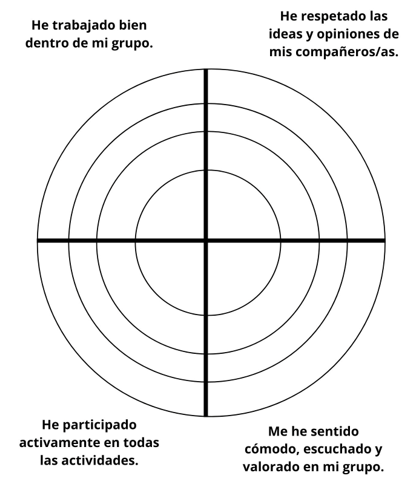
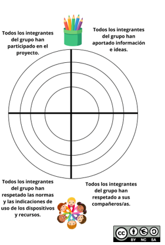

Técnicas e instrumentos de evaluación recomendadas
Técnica: observación directa y sistemática.
Instrumento: lista de cotejo.
Esta técnica e instrumento de evaluación se utilizará en las sesiones 1,2,3 y 5. En estas sesiones predomina la expresión oral (investiga, razona y explica). La observación se realizará en momentos concretos planificados previamente. La realizaremos con un formulario de Google vinculado a Classroom. Las respuestas quedarán registradas automáticamente en una hoja de cálculo que nos permite tener una visión más global del progreso del alumno/a.
Los indicadores que componen la lista de cotejo son:
- Participa en conversaciones de manera respetuosa.
- Escucha a los compañeros/as sin interrumpir.
- Añade y argumenta información relacionada con el tema hablado.
- Colabora activamente con su grupo/pareja/trío.
- Sigues las pautas dadas.
Estos datos se recogerán en una tabla sencilla con dos niveles:
- Sí, lo consigue.
- No, necesita ayuda.
Al utilizar este instrumento, pueden aparecer variables que alteren los resultados. Para ello aplicaremos las siguientes medidas:
- Alumno/a tímida:
Valoraremos sus intervenciones en diferentes momentos del proyecto, tratando de crear un clima de confianza en el aula.
- Alumno/a con afán de protagonismo:
Haremos valoraciones individuales y grupales.
- Alumno/a con diferente nivel de desarrollo madurativo:
Haremos valoraciones teniendo en cuenta el punto de partida y no comparando con el resto del grupo.

Técnica: análisis del producto final del alumnado.
Instrumento: rúbrica.
Esta técnica la emplearemos en las sesiones 4,6 y 7 que desencadenan en la elaboración final del producto final. Classroom nos permite asociar una rúbrica a una tarea concreta e incluir los siguientes criterios:
- Selecciona información relevante sobre el lugar asignado, incluyendo datos importantes y evitando la repetición.
- Describe el lugar con un vocabulario acorde a su edad y expresa su importancia.
- Identifica y ubica el lugar dentro del mapa o plano y explica cómo llegar a ese lugar con indicaciones claras y sencillas.
- Habla con un volumen, entonación y ritmo adecuado, expresando la información en un orden coherente.
- Utiliza CANVA y otros dispositivos siguiendo las indicaciones dadas, respetando los turnos y solicitando ayuda a su grupo o docente.
- Presenta un producto final organizado, atractivo y estructurado de manera coherente para facilitar su comprensión.
Estos aspectos se valorarán en la rúbrica por medio de cuatro niveles de logro:
1. Excelente.
2. Adecuado.
3. En proceso.
4. Necesita apoyo.
Al utilizar este instrumento, pueden aparecer variables que alteren los resultados. Para ello aplicaremos las siguientes medidas:
- Diferentes niveles de competencia digital:
Valoraremos exclusivamente el uso funcional que le dé a la herramienta.
- Problemas con las apps o dispositivos:
Valorar de manera aislada las competencias del alumnado sin tener en cuenta los imprevistos tecnológicos.
- Implicación desigual en el grupo:
Añadir a la rúbrica una observación individualizada de los componentes del grupo.


Técnica: Observación directa y sistemática.
Instrumento: diana de autoevaluación y coevaluación.
Emplearemos este instrumento de evaluación en la sesión 8 al presenta nuestro proyecto a la comunidad educativa. Podremos transformar estas dianas en un formulario de Google con escalas de valoración del 1 al 4. Para ello usarán los portátiles del centro por turnos, registrándose sus respuestas en una hoja de cálculo que el maestro valorará posteriormente. Los aspectos que el alumnado valorará son:
- He trabajado bien dentro de mi grupo.
- He respetado las ideas y opiniones de mis compañeros/as.
- He participado activamente en todas las actividades.
- Me he sentido cómodo, escuchado y valorado en mi grupo.
Por otro lado, evaluaremos también el trabajo y esfuerzo de nuestros compañeros con los siguientes aspectos:
- Todos los integrantes del grupo han participado en el proyecto.
- Todos los integrantes del grupo han aportado información e ideas.
- Todos los integrantes del grupo han respetado las normas y las indicaciones de uso de los dispositivos y recursos.
- Todos los integrantes del grupo han respetado a sus compañeros/as.
En estas dianas estableceremos cuatro capas que el alumnado coloreará de algún color, dependiendo de la valoración:
- Capas 1,2,3,y 4 = muy bien.
- Capas 1,2 y 3 = bien.
- Capas 1 y 2 = regular.
- Capa 1 = mal.
Al utilizar este instrumento, pueden aparecer variables que alteren los resultados. Para ello aplicaremos las siguientes medidas:
- Valorarse siempre alto:
Explicaremos con ejemplos cada nivel para que sean realistas.
- Influencia de la amistad:
La diana de coevaluación será anónima, reflejándose solo el grupo.
- Dificultades para valorar su aprendizaje:
Guiar la valoración mediante preguntas orales.


Unificación de datos.
Como hemos señalado anteriormente, los instrumentos de evaluación seleccionados se pueden digitalizar por medio de Classroom y las herramientas que tiene asociadas. Las listas de cotejo se elaboran con los formularios de Google, integraremos una rúbrica a cada tarea en Classroom y las dianas de autoevaluación y coevaluación se pueden transformas en formularios con escalas de valoración. La información que se recoja con estos medios, se registran en hojas de cálculo que aporten una visión más global y objetiva del aprendizaje del alumno/a.
En los centros educativos disponemos del cuaderno de evaluación de Sénca. Podremos trasladar toda esta información y asociarla a los criterios de evaluación seleccionados para nuestro curso. De esta manera tendremos todos los datos recogidos en una única herramienta que nos facilita la evaluación competencial del alumnado, valorando los objetivos alcanzados y las dificultades detectadas.